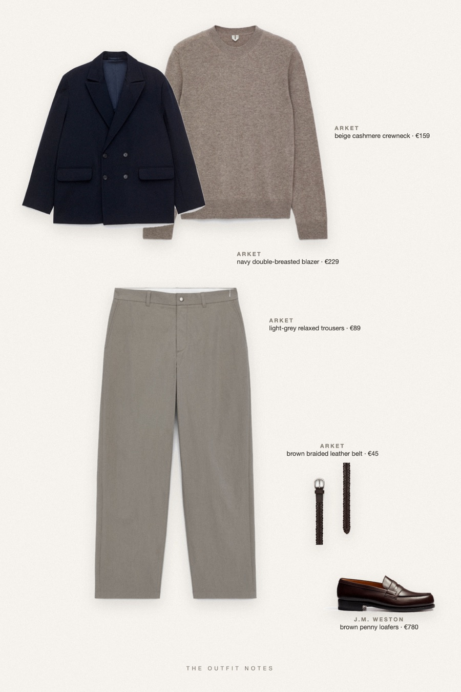
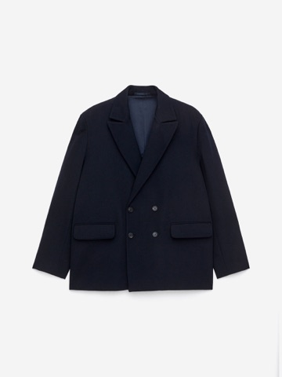
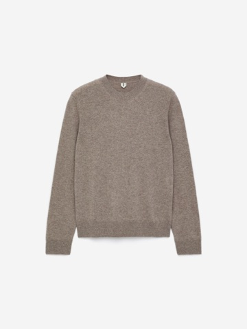

Dinner Navy
double-breasted, cream cashmere

What to wear for Christmas dinner men: a navy double-breasted wool blazer over a cream cashmere crew-neck, light grey chinos and J.M. Weston 180 loafers. A classy holiday, semi formal outfit that works for meeting the in-laws, Sunday lunch or a candlelit family table.
The pieces
This page contains affiliate links: if you buy through them, we may earn a commission at no extra cost to you. Disclosure.

ARKET
Navy double-breasted blazer
Shop
ARKET
Beige cashmere crewneck
Shop ARKET
ARKET
Light-grey relaxed trousers
Shop![J.M. Weston Mocassin 180 [homme cuir lisse marron mélèze]](../../img/products/jm-weston-180-moccasin-marron-meleze.jpg) J.M. Weston
J.M. Weston
Brown penny loafers
Shop ARKET
ARKET
Brown braided leather belt
Shop
Prices are indicative, taken when the look was published, and may have changed. Pictures of the outfit are AI-generated illustrations of real products; the product photos are the retailers' own.
Published 2 October 2026.